ㅑ
이번 장에서는 Lambda 를 이용해서 Dynamo DB의 고객 정보를 Contact Flow 로 불러올 수 있도록 Python 코드를 작성합니다. AWS Lambda 는 서버를 운영하지 않고도 코드를 실행할 수 있는 서비스입니다. 자세한 내용은 다음 링크를 참고하세요. AWS Lambda: https://aws.amazon.com/lambda/
아래 화면과 같이 Lambda 서비스로 이동합니다. 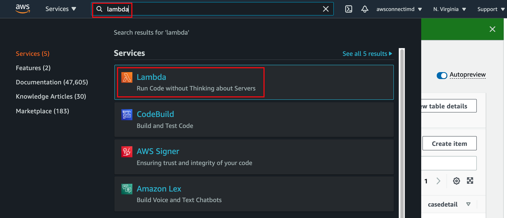
Create function 버튼을 클릭하여 새로운 Lambda 함수를 생성합니다. 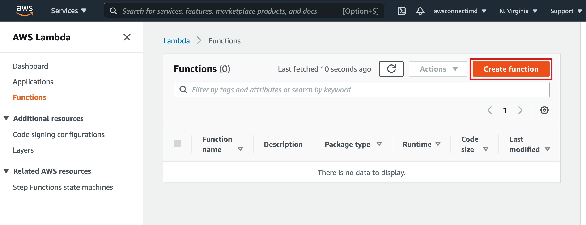
화면 상단에서 Author from scratch 를 선택합니다. Function name 은 아래 Text 를 복사해서 정확히 입력합니다. Runtime 은 여기에서는 Python 3.8 로 설정합니다. Change default execution role 을 클릭하여 Role 을 설정할 수 있도록 합니다. 이전 장에서 생성했던 Role (role-connect-imd) 을 선택합니다. 모두 설정했으면 Create function 버튼을 클릭하여 진행합니다.
func-connect-imd
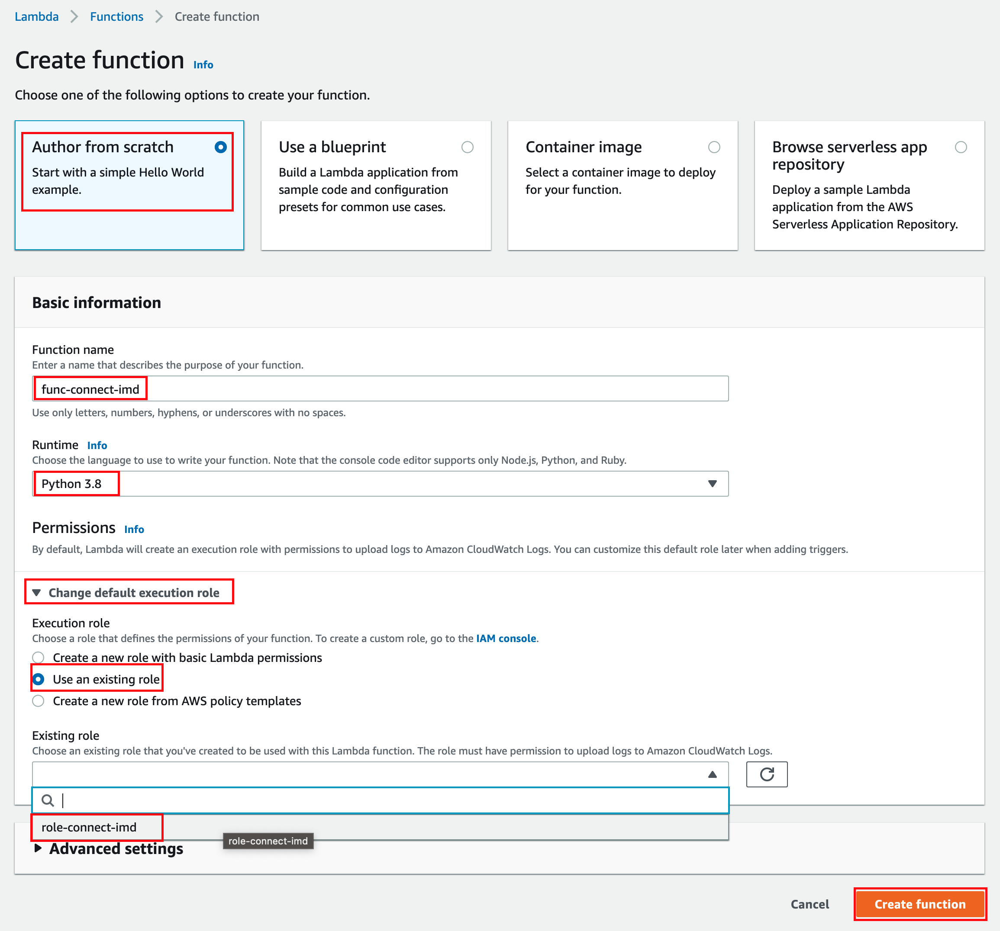
아래 화면에서 Code 탭을 선택하고 lambda_function.py 를 작성합니다. 기존 코드를 제거하고 아래 Text를 복사해서 붙여넣습니다. 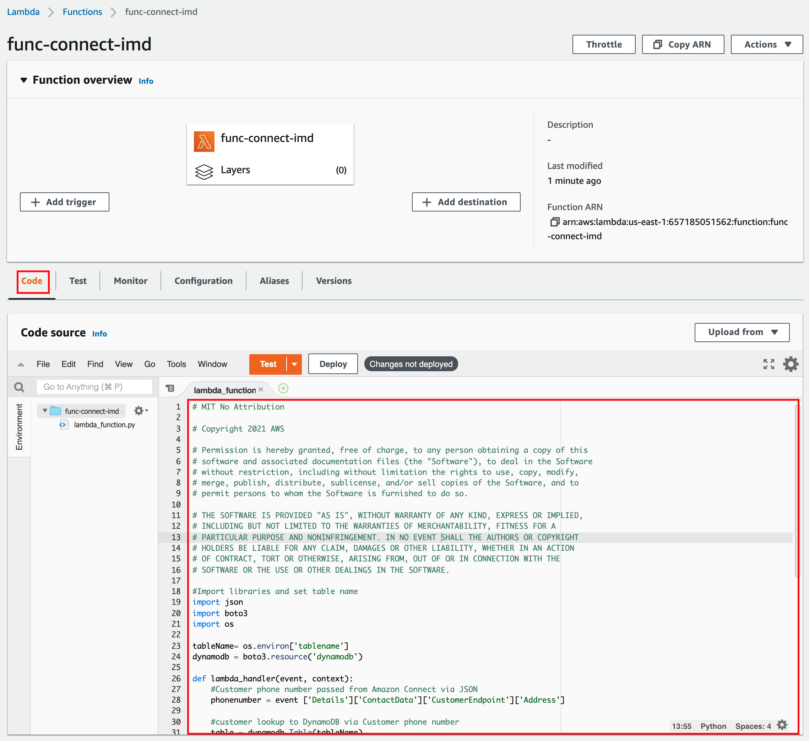
```python
# MIT No Attribution
# Copyright 2021 AWS
# Permission is hereby granted, free of charge, to any person obtaining a copy of this
# software and associated documentation files (the "Software"), to deal in the Software
# without restriction, including without limitation the rights to use, copy, modify,
# merge, publish, distribute, sublicense, and/or sell copies of the Software, and to
# permit persons to whom the Software is furnished to do so.
# THE SOFTWARE IS PROVIDED "AS IS", WITHOUT WARRANTY OF ANY KIND, EXPRESS OR IMPLIED,
# INCLUDING BUT NOT LIMITED TO THE WARRANTIES OF MERCHANTABILITY, FITNESS FOR A
# PARTICULAR PURPOSE AND NONINFRINGEMENT. IN NO EVENT SHALL THE AUTHORS OR COPYRIGHT
# HOLDERS BE LIABLE FOR ANY CLAIM, DAMAGES OR OTHER LIABILITY, WHETHER IN AN ACTION
# OF CONTRACT, TORT OR OTHERWISE, ARISING FROM, OUT OF OR IN CONNECTION WITH THE
# SOFTWARE OR THE USE OR OTHER DEALINGS IN THE SOFTWARE.
#Import libraries and set table name
import json
import boto3
import os
tableName= os.environ['tablename']
dynamodb = boto3.resource('dynamodb')
def lambda_handler(event, context):
#Customer phone number passed from Amazon Connect via JSON
phonenumber = event ['Details']['ContactData']['CustomerEndpoint']['Address']
#customer lookup to DynamoDB via Customer phone number
table = dynamodb.Table(tableName)
response = table.get_item(Key={'phonenumber' : phonenumber})
#If record exists write values to variables
if 'Item' in response:
firstname = response['Item']['firstname']
lastname = response['Item']['lastname']
birthdate = response['Item']['birthdate']
lastagent = response['Item']['lastagent']
status = response['Item']['status']
casenumber = response['Item']['casenumber']
casedetail = response['Item']['casedetail']
#Return variables to Amazon Connect
return {'message': 'Success',
'firstname' : firstname,
'lastname' : lastname,
'birthdate' : birthdate,
'lastagent' : lastagent,
'status' : status,
'casenumber' : casenumber,
'casedetail' : casedetail,
}
#If no match return a default message
else:
return { 'message': 'Fail'}
```
위 코드는 Production 용도로 사용하는 코드가 아닌 실습용으로 사용하는 코드입니다. Production 에 반영하기 전 꼭 리뷰를 수행하시기 바랍니다.
위의 코드에서 lambda_handler 의 paramter 중 event로 인입 전화의 전화번호를 가져올 수 있습니다. 이외 인입 전화 관련 정보를 event parameter 를 통해 Json 의 형태로 받아올 수 있습니다. 다음 링크를 참고하세요. Invoke a function from a flow
Configuration 탭을 클릭하고 왼쪽에서 Environment variables 항목을 클릭합니다. Edit 버튼을 클릭합니다. 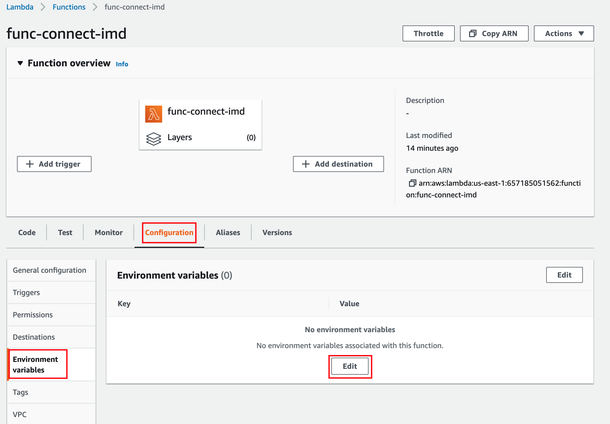
Add environment variables 버튼을 클릭합니다. 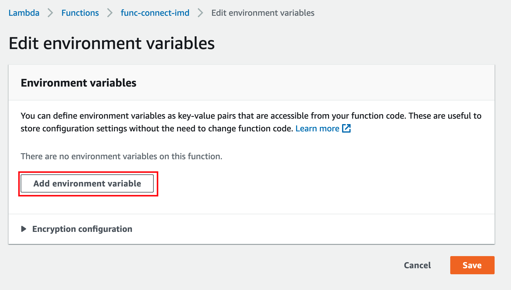
Key 와 Value 를 아래 Text 를 복사해서 정확히 입력합니다.
tablename
table-connect-imd
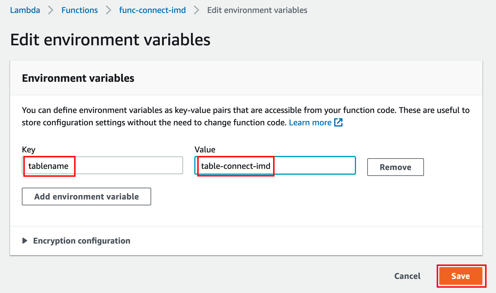
다시 Code 탭으로 돌아옵니다. Deploy 버튼을 클릭해서 함수를 배포합니다. 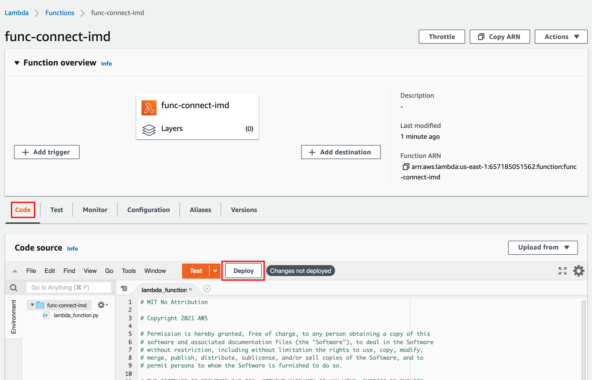
아래 화면과 같이 잘 배포되었는지 확인합니다. 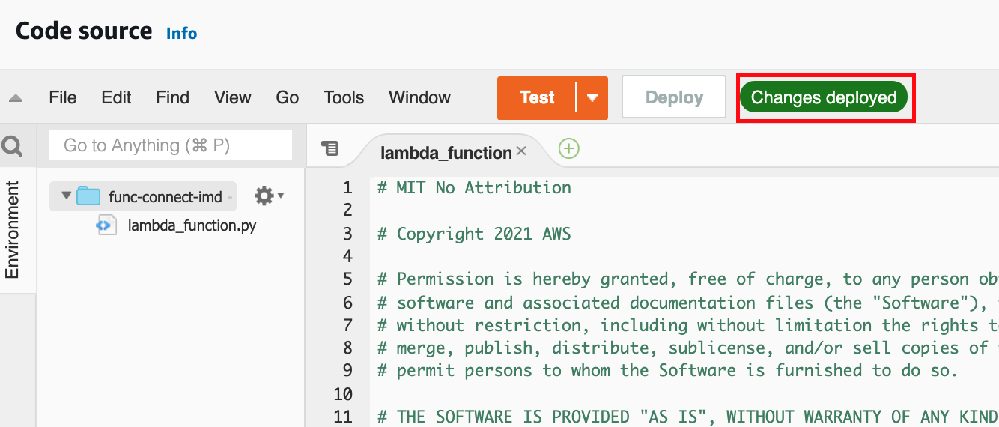
다시 Amazon Connect 서비스로 이동합니다. 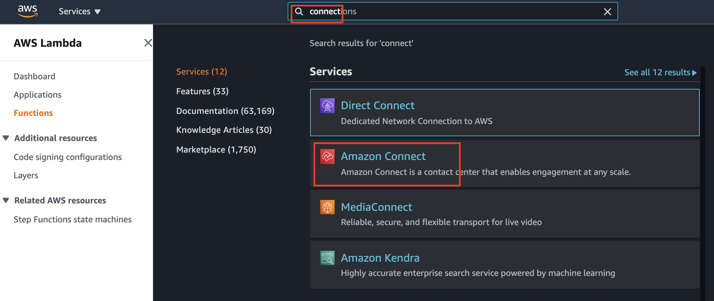
이전에 생성한 Connect 인스턴스를 선택하여 클릭합니다. 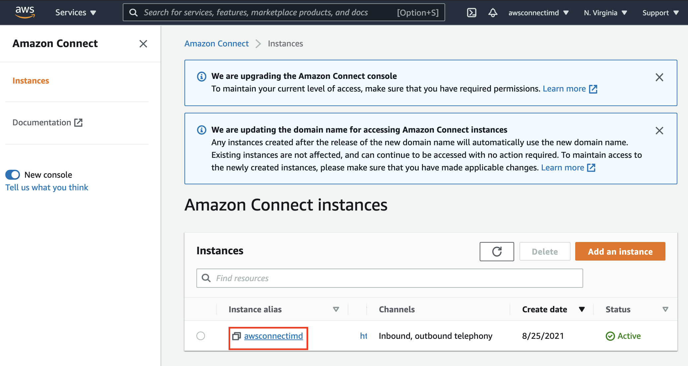
아래 화면과 같이 왼쪽에서 Contact flows를 선택하고 오른쪽 화면에서 아래 쪽으로 스크롤해서 AWS Lambda 항목에서 Lambda Functions 를 이전에 생성한 Lambda 함수 (func-connect-imd)로 선택합니다. 이후 +Add Lambda Function 버튼을 클릭해서 함수를 등록합니다. 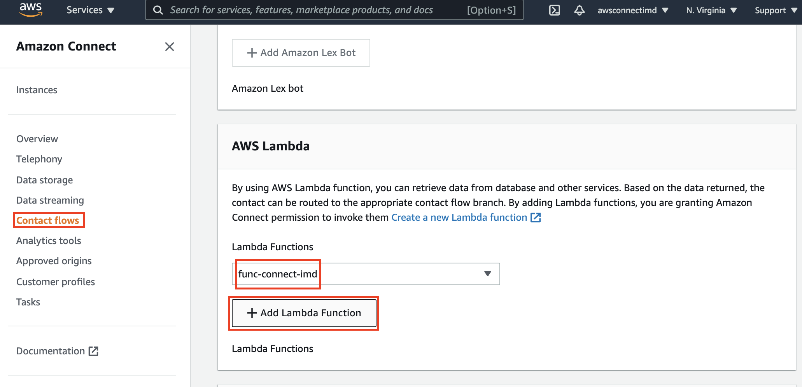
+Add Lambda Function 버튼을 클릭해야 등록이 완료됩니다.
Lambda 함수에 입력한 코드는 별도의 서버를 운영할 필요 없이 호출할 때만 실행하고 실행한 시간 만큼만 과금이 됩니다. 다음 장에서는 Connect 의 Contact Flow에서 위 함수를 호출하여 DynamoDB의 고객 정보를 가져올 수 있도록 해보겠습니다.